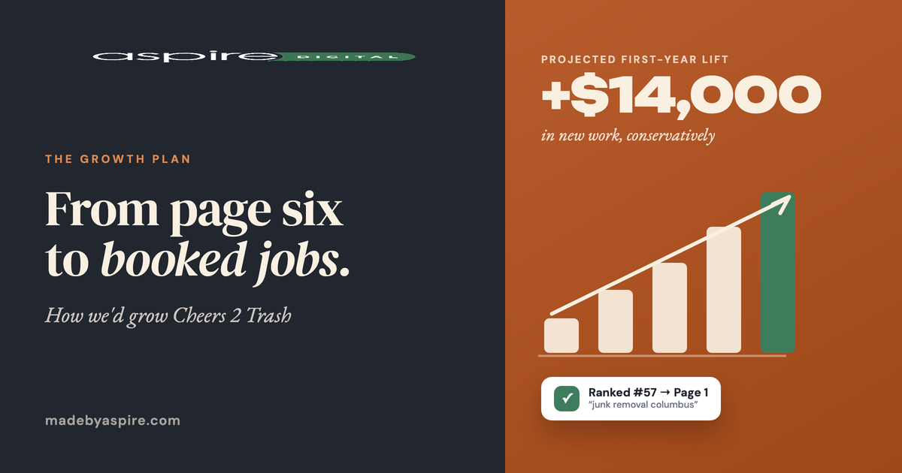

Concept · Internal Review
Growth-Story OG Card — two treatments
Both use the same real Cheers 2 Trash research data (projected $14K first-year lift, #57 → page 1 for “junk removal columbus,” 2 → 19 town pages), rendered on the locked Aspire OG system. This is the share card that portrays how we grow a business — where they are today versus what growth looks like with us.


Data-driven: one generator takes business name, headline, projected lift, and up to two before→after proof lines — any prospect or brief drops in with their own real numbers. Nothing here is deployed to a live brief yet.